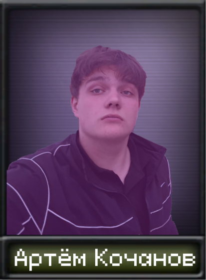
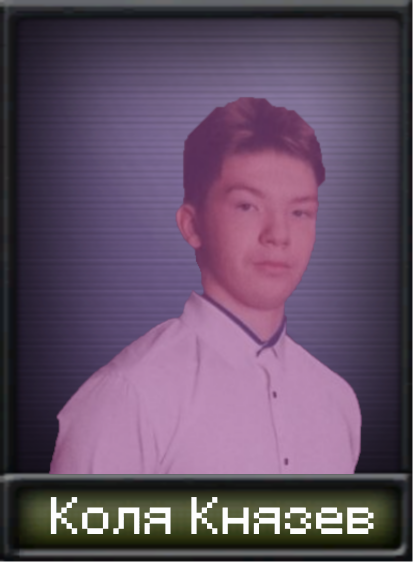
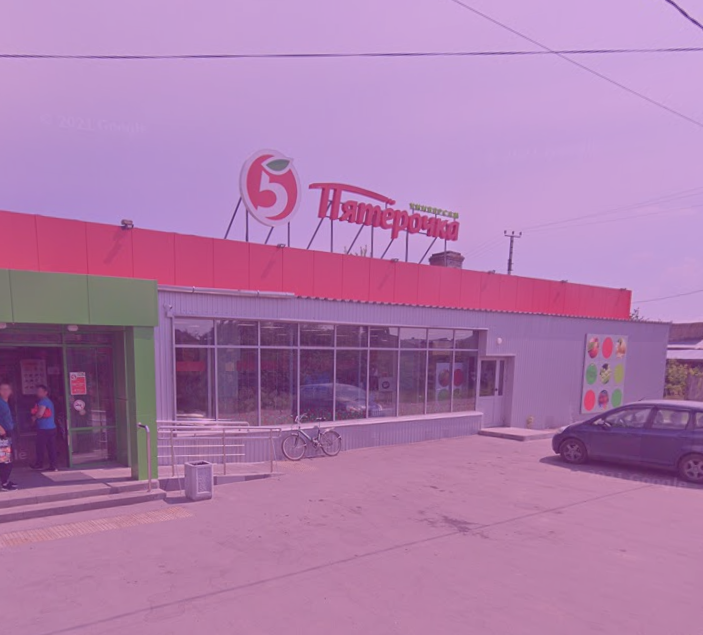
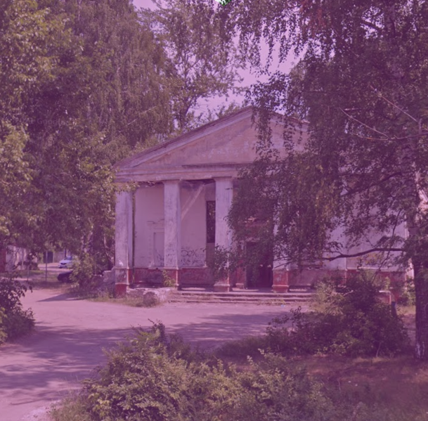
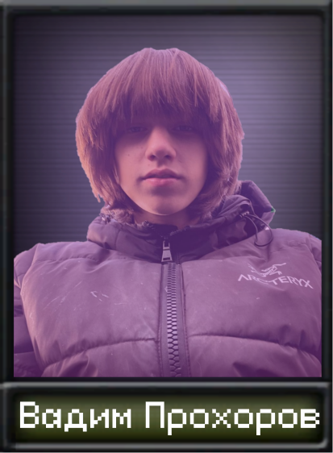
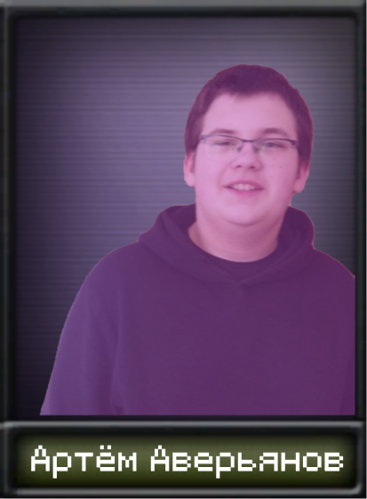

Основной сюжет

Северо-Восточная Горбатовка вышла из состава Горбатовки, когда население выбрало "Школьное сообщество". Все кто были против "Школьного сообщества" стали присоединяться к Северо-Восточной Горбатовке. Им досталась значительная часть Горбатовской промышленности. С севера идут боестолкновения с Новым Доскино. Новое Доскино обстреливает промышленность Северо-Восточной Горбатовки, что находится у ж/д.

Возглавляет Северо-Восточную Горбатовку "Князевская банда" со штаб-квартирой в доме 28. Главой стал Коля Князев. Он часто выходит в народ и что-то красноречиво рассказывал. На одном из таких выступлений агент Южной Горбатовки совершает неудачное покушение на Коляна. Отношения между двумя Горбатовками накаляются всё сильнее и сильнее. В князевской банде все пытаются взять власть в свои руки. Шилов выступает на собрании князевской банды. Ему удаётся навести порядок в князевской банде. Также Шилов предложил поставить во власти своего хорошего друга Артёма Кочанова (Кочан).


Главный офис Северо-Восточной Горбатовки - здание бывшей пятёрочки. В офисе семья Аверьяновых привлекает капитал от инвесторов из Нижнего Новгорода и Дзержинска. Также у этого офиса проходят выступления правительства. Здесь собираются жители западной половины Северо-Восточной Горбатовки. Второй главный офис - здание старого клуба, которое восстановили. Здесь собираются жители восточной половины Северо-Восточной Горбатовки.

Сюжет разделяется
1) Власть достаётся Кочану
Кочан, понимая, что агенты АЮГ повсюду, создаёт своё агентство. Название банальное "Князевское Агентство". Усиливает охрану дома 28. Начинает переброску северной промышленности в восточную половину Северо-Восточной Горбатовки. Понимая, что Северо-Восточная Горбатовка зажата между двух противников, нужно срочно это исправить. Лучше всего сначала разобраться с Новым Доскино, но можно и попытаться захватить Южную Горбатовку.
2) Власть остаётся у Колясика

Колян создаёт агентство "Князевское Агентство". Вводит строгую паспортную систему, чтобы было проще выявлять агентов АЮГ. Также он начинает чистки населения и приближённых. Нерусское население подвергается гонениям. Переформировывается управленческая система Северо-Восточной Горбатовки. Теперь власть полностью в руках Коляна. Северо-Восточная Горбатовка разделяется на две части: западную и восточную. Управлять западной частью Колян отправляет Вадима Прохорова (ВОрима). Управлять восточной частью он вызвался сам. Колян собирается построить линию обороны вдоль ж/д ("Линния Князева"), и вторгнуться в Южную Горбатовку.
3) Агенты АЮГ внедряются в "Князевскую банду"

Агенты АЮГ внедряются в "Князевскую банду". Их агенты начинают распространять ложную информацию об управляющем князевской банды. В банде начинается раскол. Южная Горбатовка вторгается в Северо-Восточную. Западная часть присоединяется без боя. Семья Аверьяновых проявляет лояльность "Школьному сообществу". Показушная лояльность только у Артёма Аверьянова.
3.1) Аверьянов начинает восстание против "Школьного сообщества"
Аверьянов и его друг Вадим Прохоров начинают восстание против "Школьного сообщества". Если в Ивановке Ярик, то Ярик поможет Аверьянову, вступив в войну на его стороне. Взамен Ярик требует подчинения Ивановке.
На главную